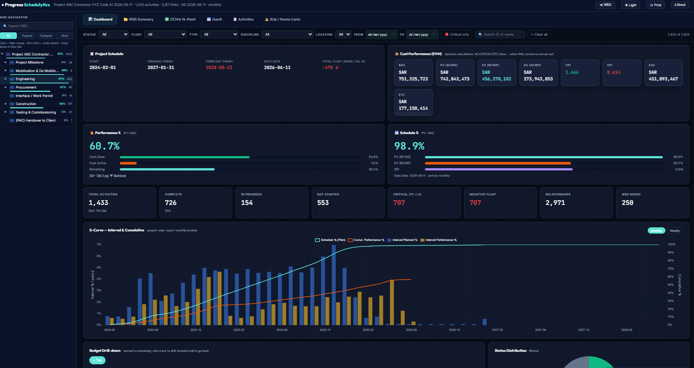
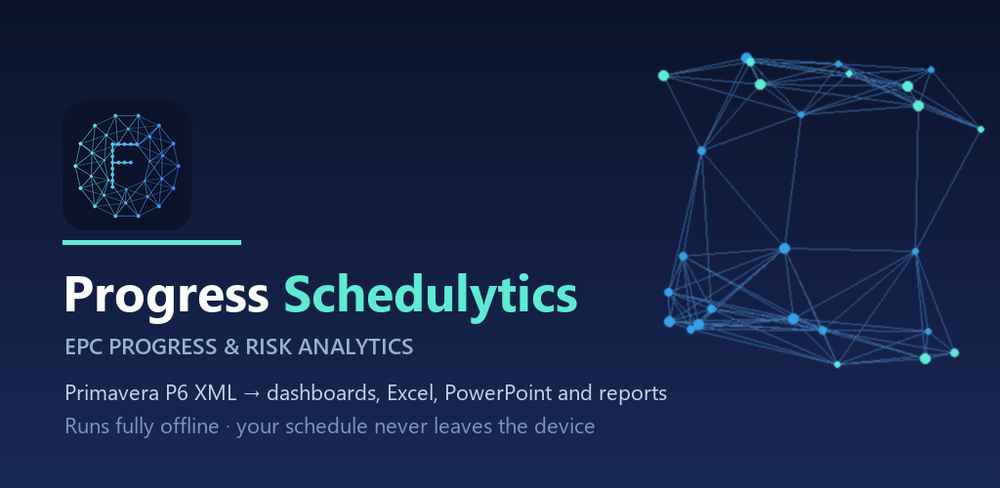
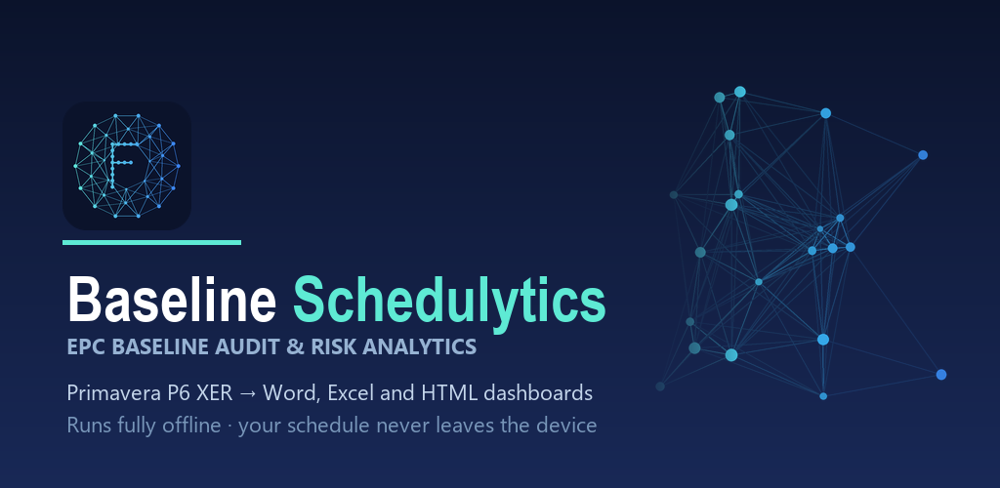
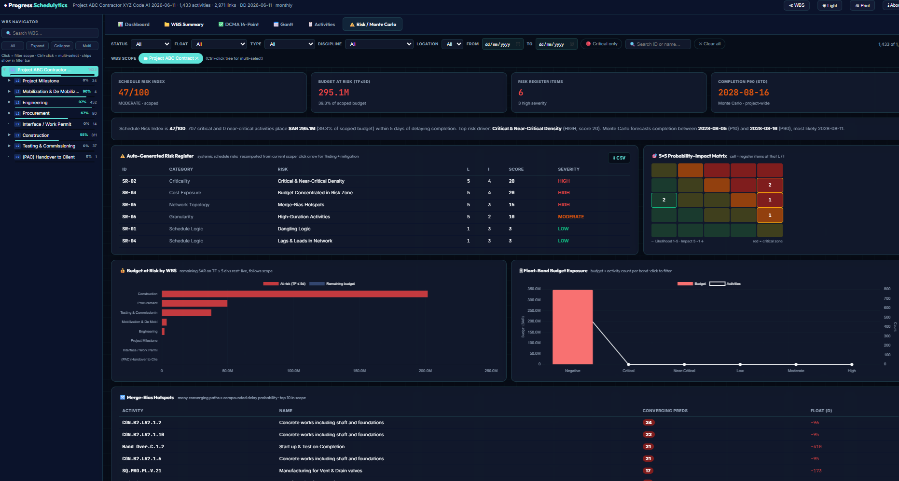
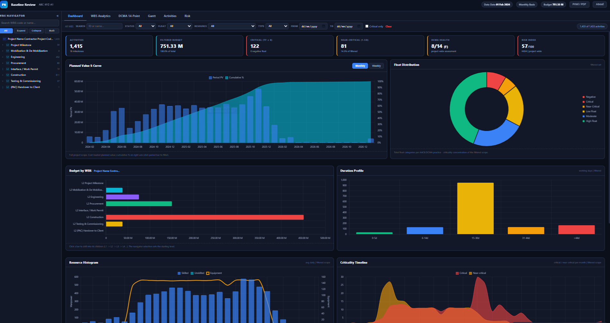
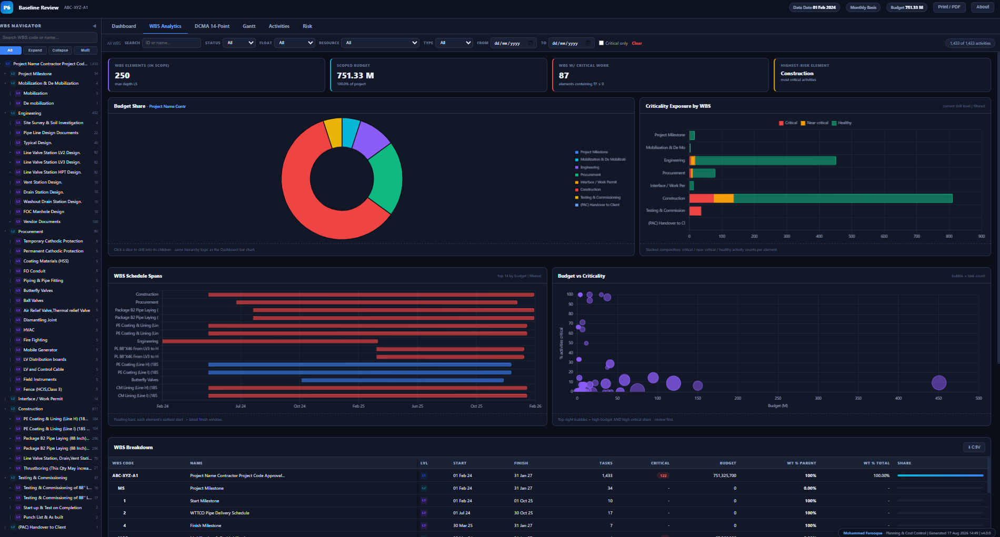

Celebrating India's 80th Independence Day 🇮🇳
Special Independence Festival Offer · Flat 75% OFF All Schedulytics Tools
 ⭐ 75% OFF SPECIAL
Ends 20 September 2026
⭐ 75% OFF SPECIAL
Ends 20 September 2026
⭐ 75% OFF SPECIAL
Ends 20 September 2026
⭐ 75% OFF SPECIAL
Ends 20 September 2026
Schedulytics is the dedicated Primavera P6 reporting tool and DCMA 14-point assessment suite that performs deep XER file analysis and converts P6 XML/XER schedules into 22-sheet Excel workbooks, interactive single-file HTML dashboards, and forensic delay analyses in seconds. Built for planning engineers, PMO leads, and EPC contractors who need fast, reliable, 100% offline Primavera analytics and instant P6 schedule quality checks.

✨ Live Single-File HTML DashboardNo monthly recurring subscription traps. Free Microsoft Store install with a 30-day evaluation trial, followed by a perpetual lifetime license for Windows PC and Android phone.
Download the native Windows application directly from the Microsoft Store. Includes a full 30-day evaluation trial with all calculation engines active (outputs contain an evaluation watermark).
Get your lifetime license key from Gumroad for just $24.75 USD. Removes all watermarks permanently and activates 2 devices: your PC and your Android phone.
Purpose-built software tools to handle every phase of schedule reporting, DCMA baseline quality auditing, recovery modeling, and forensic delay claims.

Turn a Primavera P6 XML export into an executive reporting pack in minutes. Automated 22-sheet Excel analytics, interactive HTML dashboard with two-way cross filtering, PowerPoint deck, and Word/PDF Delay Report.

Audit a Primavera P6 baseline .xer submittal against 22-point DCMA and industry quality standards before acceptance — with Word audit narratives, Excel analysis matrices, and interactive HTML dashboards.

Score schedules against DCMA, Saudi Aramco & SABIC specifications with a human-approved automated fix engine, custom CPM engine, and recovery simulations.

Perform forensic schedule delay analysis conforming to AACE 29R-03, FIDIC, NEC3/4, and SCL delay protocols. Handles Impacted As-Planned, TIA, As-Planned vs As-Built, and Window Analysis.
Explore actual screenshots of the interactive single-file HTML dashboards, P6 S-curve risk models, and WBS tree navigators produced by Schedulytics.
Single-file standalone HTML dashboard with real-time KPI filters, SPI/CPI dials, EVM metrics, and discipline performance charts.

P10, P50, and P90 completion date distribution curves and critical path sensitivity tornado charts.

Visual compliance radar, logic relationship breakdown, negative float detection, and critical path health scoring.

Hierarchical WBS exploration with instant activity predecessor and successor verification.
Answers to common technical, commercial, and licensing questions from planning engineers and project controls managers.
Visual compliance radar, logic relationship breakdown, negative float detection, and critical path health scoring.
Hierarchical WBS exploration with instant activity predecessor and successor verification.
Answers to common technical, commercial, and licensing questions from planning engineers and project controls managers.
Yes, absolutely. Schedulytics includes its own high-speed CPM parsing engine. It reads raw exported .xer and .xml schedule files or connects directly to local SQLite/Oracle schedule databases. You do not need Primavera P6 installed on the client machine to generate Excel analytics, interactive HTML dashboards, or DCMA baseline audit reports.
Never. Schedulytics is 100% offline by design. All schedule parsing, logic gap checks, Earned Value calculations, and report rendering take place entirely within your computer's local memory. The only network call is a one-time cryptographic license validation during activation. After that, the software functions completely offline.
In a single run (typically 15–30 seconds), Progress Schedulytics generates:
1. A 22-sheet executive Excel workbook with automated S-Curves, EVM tables, and WBS summaries.
2. A single-file portable HTML dashboard with interactive cross-filters and WBS navigation.
3. A PowerPoint executive presentation deck formatted for management reviews.
4. A Word / PDF narrative Delay Report ready for formal submission.
Every Progress Schedulytics license includes dual-device activation: 1 Windows desktop PC and 1 Android phone at no extra cost. The Android app (launching on Google Play) allows planning engineers and site leads to view interactive P6 schedule dashboards, check WBS progress, and inspect critical paths right from the jobsite.
The free Microsoft Store version provides full access to all calculation engines for 30 days, with generated deliverables carrying an evaluation watermark. Purchasing a perpetual licence key on Gumroad removes all watermarks permanently and unlocks clean, client-ready executive deliverables forever with no monthly recurring fees.